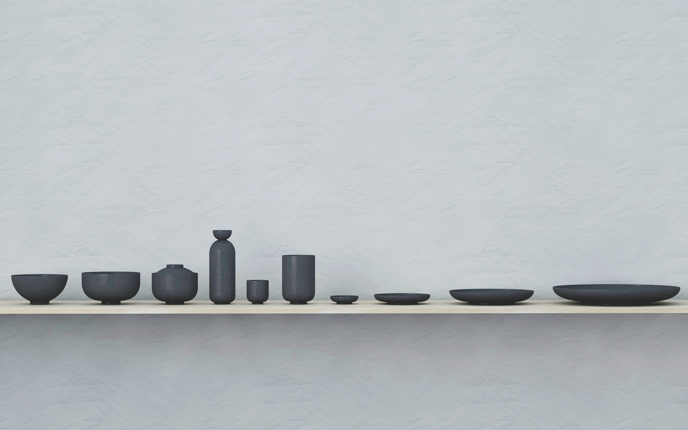
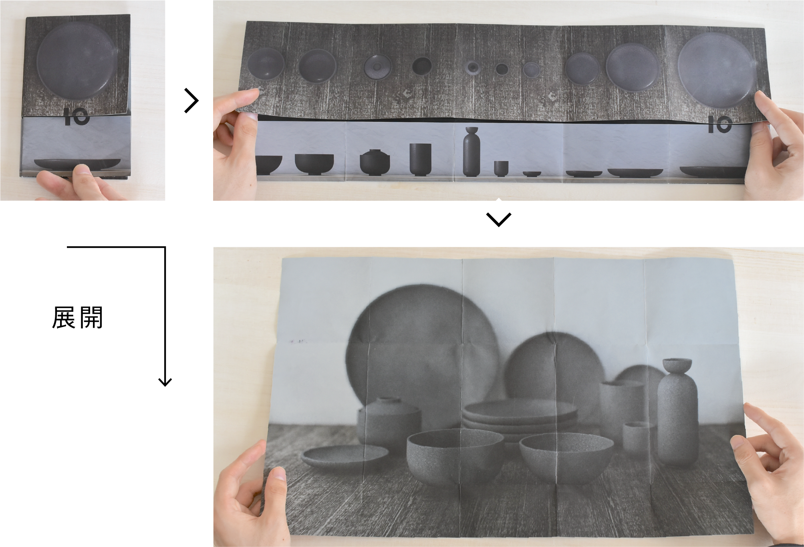

O1(owan )
2019.7 プロダクト、ブランディング
「O1(owan )」というお皿のプロダクトデザイン、商品展開を想定したプランディングデザインを行いました。
0と1のようなシンプルな造形でありながら、どこか温かみのある漆器の造形を目指しました。
プロダクトは、Cinema4DやRhinocerousを用いた3Dモデリングで制作しています。

リーフレットのコミュニケーションデザイン
紙を広げていくことで、プロダクト一つ一つのデザインから、シリーズ全体の統一されたデザインが
一覧できる仕組みにしました。ブロダクトの特徴をリーフレットのデザインにも反映しています。
